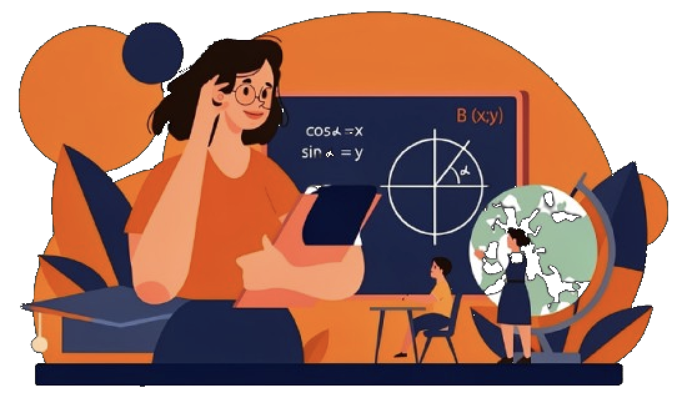
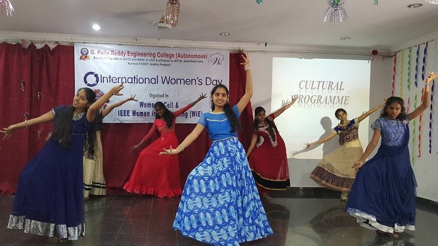
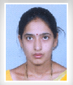
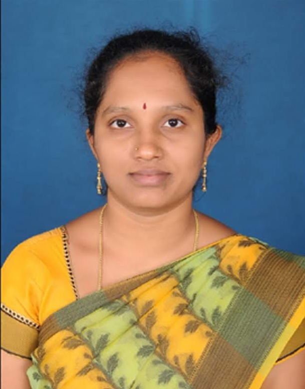
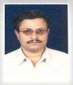
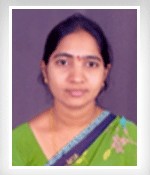
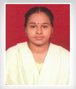
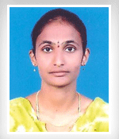

GPREC · Women's Cell
SHE RISES.
SHE LEADS.
A safe, supportive environment for every woman at GPREC — students, faculty, and staff — established 6th January 2007 pursuant to the directives of the Supreme Court of India.
01
Gallery
Moments from Women's Cell events.

“A safe space isn’t given. It’s built — one policy, one voice, one year at a time.”
Women's Cell, GPREC · since 200702
Vision
A space where women realize their potential.
To create a conducive atmosphere for women to realize their potential and help them pursue their natural interests.
Mission
Safety, equity, and confidence.
Provide a safe working and studying environment free from threats to safety; work towards a gender-sensitive community with equal opportunities for men and women; and generate the confidence for women to carve out a niche for themselves.
03
Objectives
What the cell is here to do.
- 01Redress harassment
Deal with cases of sexual, psychological, or emotional harassment in a timely, appropriate, and just manner.
- 02Address concerns
Address the issues and concerns of all women and girls working or studying at the institute.
- 03Raise awareness
Create social awareness about the problems of women and, in particular, gender discrimination.
- 04Sensitize & guide
Sensitize women about the various avenues that are open to them.
04
Committee
The people behind the cell.






05
Activities
What the cell runs through the year.
- Gender sensitization
Lectures and workshops by eminent personalities.
- Gender-theme competitions
Competitions on gender themes to make students think about gender issues.
- Awards
Lectures and institution of awards to female students, including the Best Girl Student Award and Gender Championship.
- International Women's Day
Celebration held every year across the campus.
- "She Voice"
Release of the Women's Cell annual magazine, a collection of students' articles.
- Outreach
Addressing girl students in smaller groups once every semester.
06
Reports
Annual event reports.
07
Rights & Resources
Reference documents and newsletters.
08
Notices
Events and announcements.
- Swashakthi 2024 — The Swashakthi 2024 Women Congress concluded on a high note at GPREC on December 7th, 2024.
No notices posted yet.
More events are posted on the public Women's Cell page.
09
Grievance
Women's Grievance form.
Same fields as the college's official Women's Grievance form — submitting opens your email app addressed to the Women's Cell, since this page has no backend of its own to receive it directly.
10